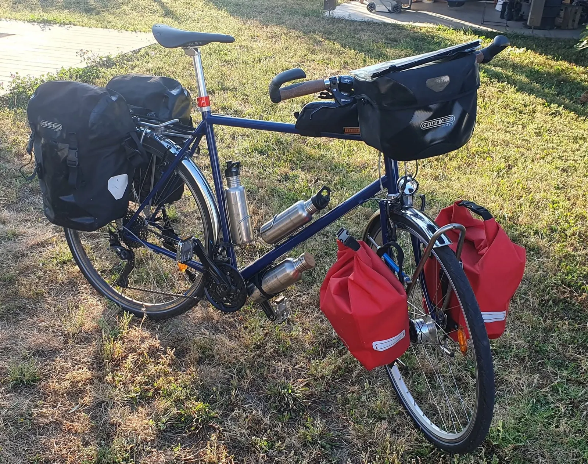
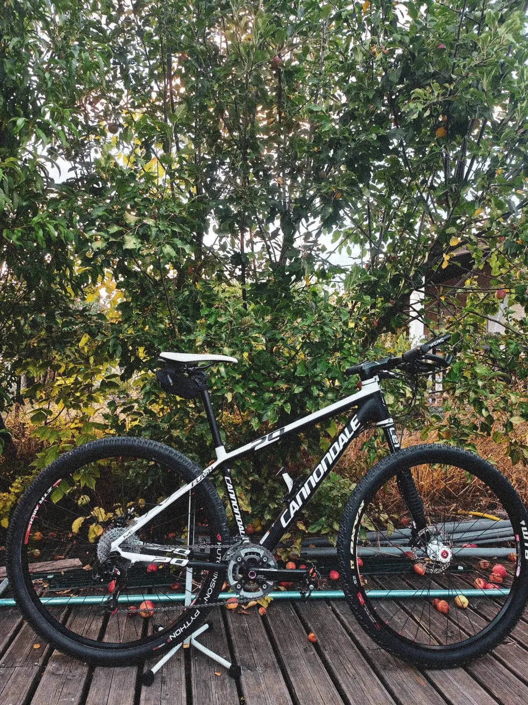
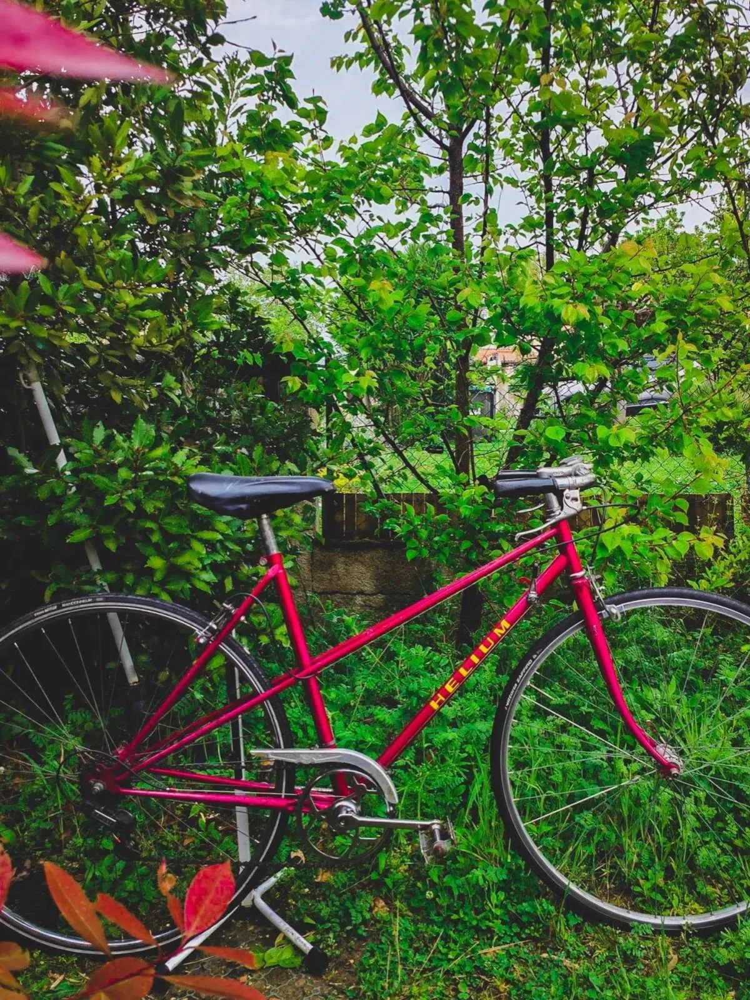
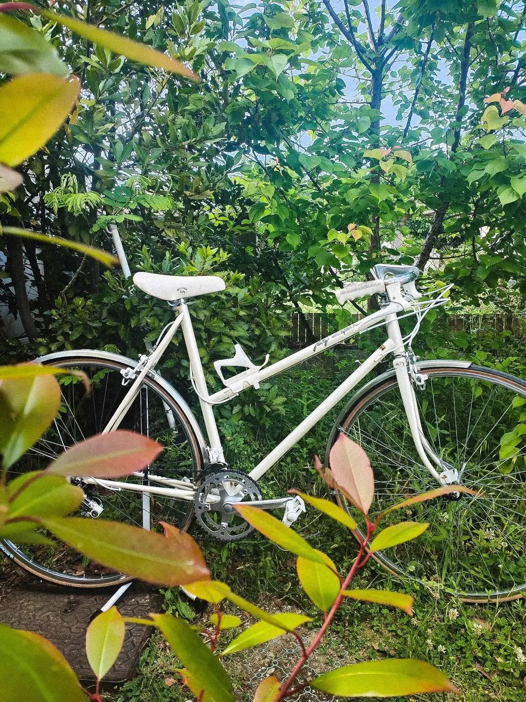
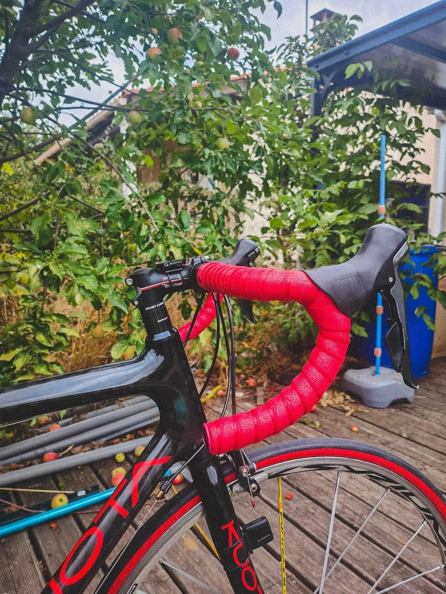
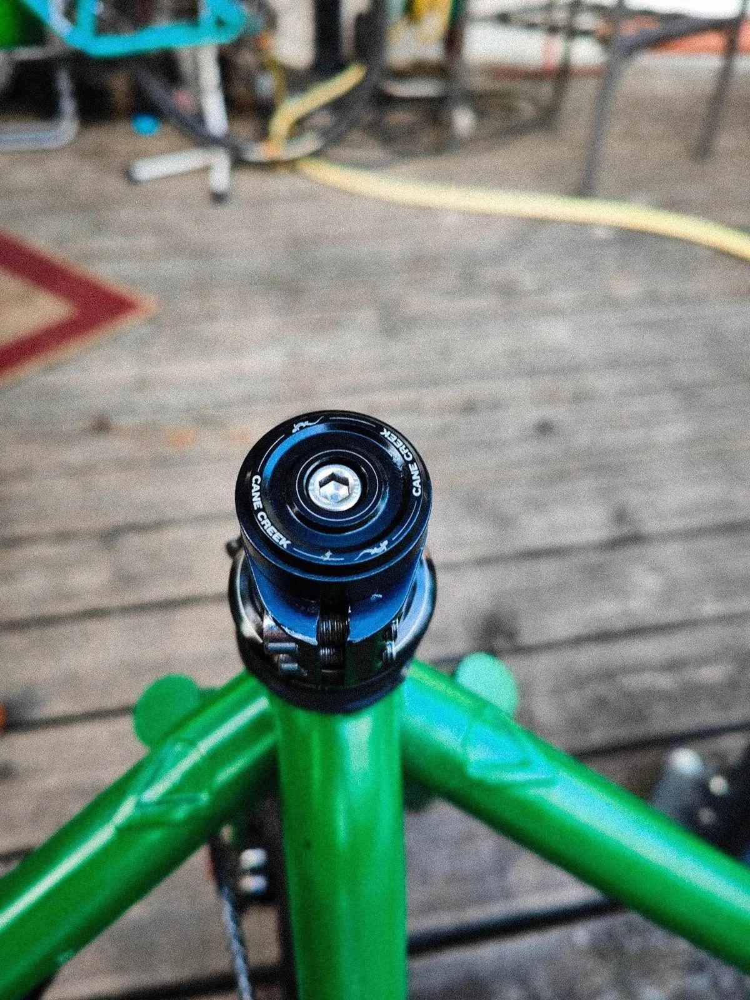
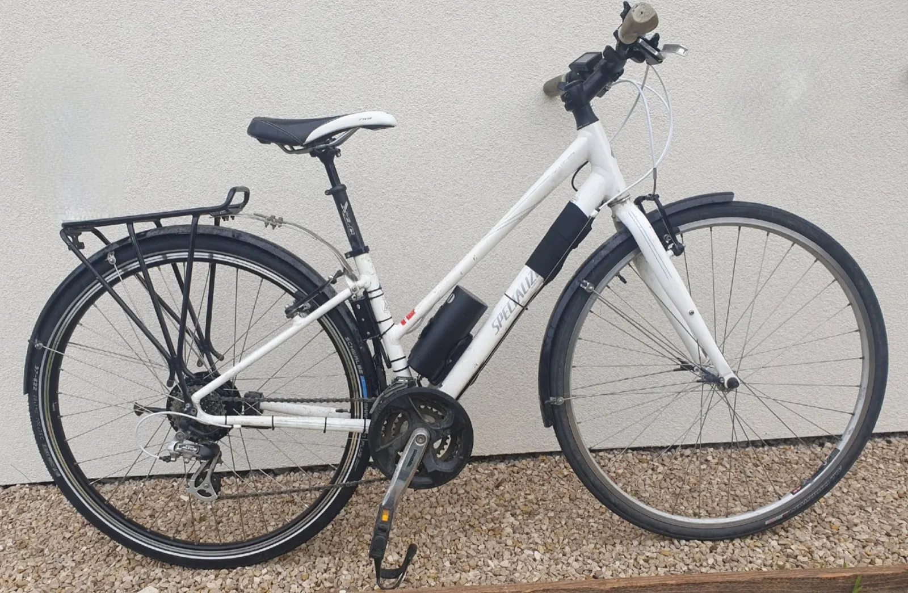
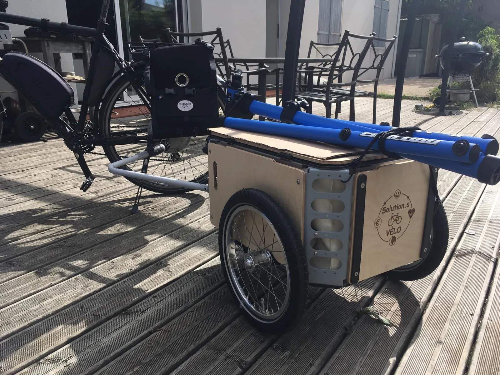

Votre vélo réparé, à Tournefeuille.

L'Atelier Mamout cycle, c'est Solution.s Vélo : un service de réparation de vélos sur rendez-vous, rue Gaston Doumergue. Remise en état, électrification, conseil : on vous reçoit en français, en anglais, en portugais ou en espagnol.
- Français
- English
- Português
- Español

Ce qui passe par l'atelier
Vélo de route, VTT, vélo de ville ou de randonnée : tous passent par l'atelier, sur rendez-vous.
Réparations
Sur rendez-vous, à l'atelier ou à domicile.
Remise en état
Vélos anciens remis en route, guidoline neuve, jeu de direction.
Électrification
Avec le kit homologué 250 W OZO : presque tous les vélos s'y prêtent.
Conseil et formation
Pour votre vélo, en plus des réparations.
Remis en route
Un vieux cadre rouge, un vélo de course blanc, une guidoline neuve : quelques vélos passés par l'atelier.





Électrifier son vélo
Quasiment tous les vélos sont électrifiables, je suis à votre disposition pour discuter de vos besoins et déterminer la solution la plus adaptée.
monté sur votre vélo
Prendre rendez-vous
Un appel ou un e-mail pour fixer le créneau, puis direction le 35 rue Gaston Doumergue, à Tournefeuille.

- Lundi9 h 30 à 12 h 30, 13 h 30 à 18 h 30
- Mardi9 h 30 à 12 h 30, 13 h 30 à 18 h 30
- Mercredi9 h 30 à 12 h 30
- Jeudi13 h 30 à 18 h 30
- Vendredi9 h 30 à 12 h 30, 13 h 30 à 18 h 30
- SamediFermé
- DimancheFermé
35 rue Gaston Doumergue
31170 Tournefeuille